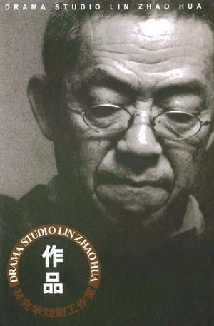

原站奖品：《林兆华戏剧作品集》DVD 一套（10 个剧目）。
为什么不再保留在线提交
旧站的问卷表单依赖 PHP 和 MySQL 数据库，并把姓名、邮箱、手机等信息写入服务器数据库。纯静态版本没有数据库，也不应该在没有明确隐私与安全方案的情况下继续收集这些个人信息。
因此新版只保存问卷的历史结构，不接受提交。若未来需要恢复互动，可使用独立表单服务，并重新设计隐私告知、数据保存和删除机制。
历史问题包括：是否看过林兆华导演作品、最喜欢的作品、是否观看《建筑大师》、是否已经购票等。